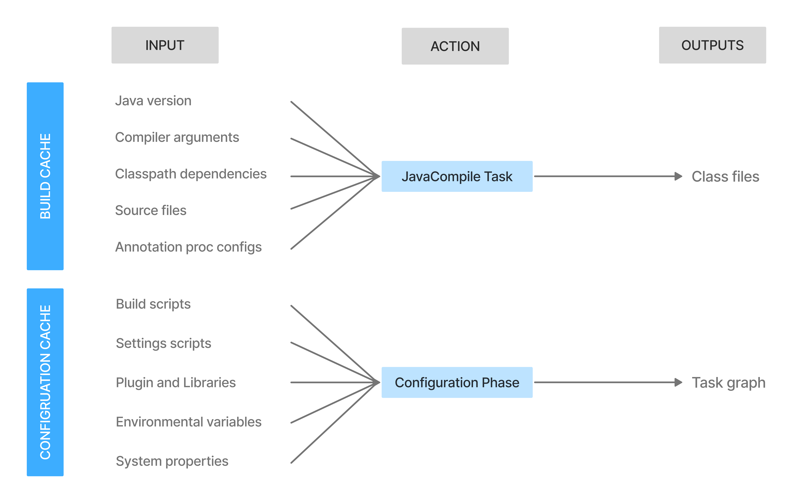
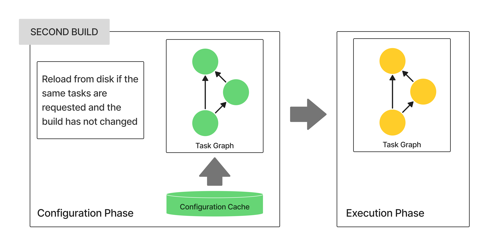
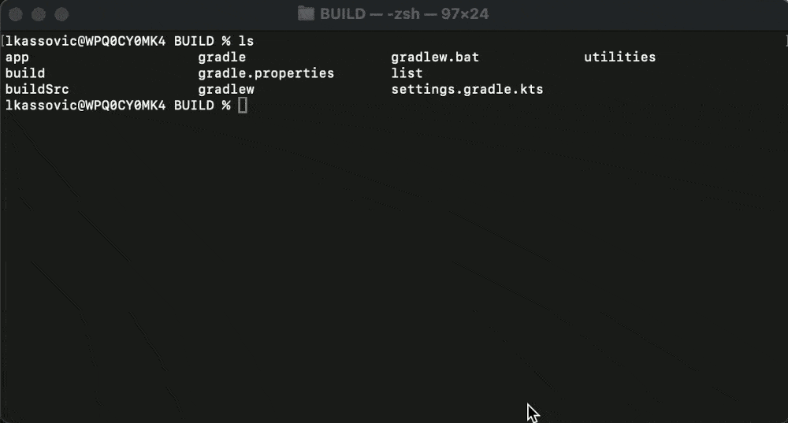
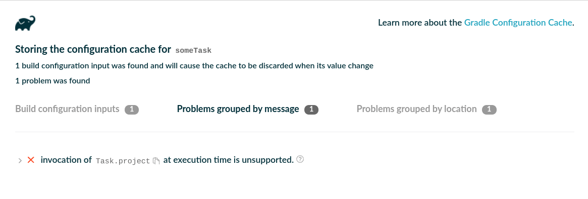
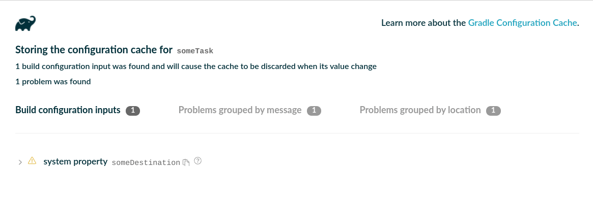

Configuration Cache
- How Configuration Caching Works
- Trying out the Configuration Cache
- Enabling the Configuration Cache
- Invalidating the Configuration Cache
- Preparing for Configuration Cache Stability
- IDE Support
- Supported Plugins
- Troubleshooting
- Configuration Cache Adoption Steps
- Testing your Build Logic
- Configuration Cache Requirements
- Handling of Credentials and Secrets
- Not Yet Implemented
The Configuration Cache improves build performance by caching the result of the configuration phase and reusing it for subsequent builds.
When enabled, the Configuration Cache allows Gradle to skip the configuration phase entirely if nothing that affects the build configuration (such as build scripts) has changed. Additionally, Gradle applies performance optimizations to task execution.
The Configuration Cache is similar to the Build Cache, but they store different types of data:
-
Build Cache: Stores outputs and intermediate files of the build (e.g., task outputs, artifact transform outputs).
-
Configuration Cache: Stores the build configuration for a particular set of tasks, capturing the output of the configuration phase.

|
This feature is not enabled by default and has the following limitations:
|
How Configuration Caching Works
When the Configuration Cache is enabled and you run Gradle for a particular set of tasks, such as gradlew check, Gradle checks for a Configuration Cache entry.
If an entry exists, Gradle uses it to skip the configuration phase.
A cache entry contains:
-
The set of tasks to run
-
Their configuration details
-
Dependency information
First-Time Execution
The first time you run a set of tasks, there is no cache entry. Gradle performs the configuration phase as usual:
-
Run init scripts.
-
Run the settings script, applying any requested settings plugins.
-
Configure and build the
buildSrcproject, if present. -
Run build scripts, applying any requested project plugins. If plugins come from included builds, Gradle builds them first.
-
Calculate the task graph, executing deferred configuration actions.
Gradle then stores a snapshot of the task graph in the Configuration Cache for future use. After this, Gradle loads the task graph from the cache and proceeds with task execution.
Subsequent Runs

On subsequent executions of the same tasks (e.g., gradlew check again), Gradle:
-
Skips the configuration phase entirely.
-
Loads the task graph from the Configuration Cache instead.
Before using the cache, Gradle verifies that no build configuration inputs have changed. If any input has changed, Gradle reruns the configuration phase and updates the cache.
Build Configuration Inputs
The following elements determine whether a Configuration Cache entry is valid:
-
Gradle environment
-
GRADLE_USER_HOME -
Gradle Daemon JVM
-
-
Init scripts
-
buildSrcand included build logic build contents (build scripts, sources, and intermediate build outputs) -
Build and Settings scripts, including included scripts (
apply from: foo.gradle) -
Gradle configuration files (Version Catalogs, dependency verification files, dependency lock files,
gradle.propertiesfiles) -
Contents of files read at configuration time
-
File system state checked at configuration time (file presence, directory contents, etc.)
-
Custom
ValueSourcevalues obtained at configuration time (this also includes built-in providers, likeproviders.execandproviders.fileContents). -
System properties used during the configuration phase
-
Environment variables used during the configuration phase
Serialization
Gradle uses an optimized serialization mechanism to store Configuration Cache entries. It automatically serializes object graphs containing simple state or supported types.
While Configuration Cache serialization doesn’t rely on Java Serialization, it understands some of its features. This can be used to customize serialization behavior, but incurs performance penalty and should be avoided.
Performance Improvements
Beyond skipping the configuration phase, the Configuration Cache enhances performance in the following ways:
-
Parallel Task Execution: All tasks run in parallel by default, subject to dependency constraints.
-
Cached Dependency Resolution: Dependency resolution results are stored and reused.
-
Optimized Memory Usage: After writing the task graph to the cache, Gradle discards configuration and dependency resolution state from memory, lowering peak heap usage.

Trying out the Configuration Cache
It is recommended to get started with the simplest task invocation possible.
Running help with the Configuration Cache enabled is a good first step:
❯ ./gradlew --configuration-cache help
Calculating task graph as no cached configuration is available for tasks: help
...
BUILD SUCCESSFUL in 4s
1 actionable task: 1 executed
Configuration cache entry stored.Running this for the first time, the configuration phase executes, calculating the task graph.
Then, run the same command again.
This reuses the cached configuration:
❯ ./gradlew --configuration-cache help
Reusing configuration cache.
...
BUILD SUCCESSFUL in 500ms
1 actionable task: 1 executed
Configuration cache entry reused.If it succeeds on your build, congratulations, you can now try with more useful tasks. You should target your development loop. A good example is running tests after making incremental changes.
If any problem is found caching or reusing the configuration, an HTML report is generated to help you diagnose and fix the issues. The report also shows detected build configuration inputs like system properties, environment variables and value suppliers read during the configuration phase.
See the Troubleshooting section below for more information.
Enabling the Configuration Cache
By default, Gradle does not use the Configuration Cache.
To enable it at build time, use the configuration-cache flag:
❯ ./gradlew --configuration-cacheTo enable the cache persistently, set the org.gradle.configuration-cache property in gradle.properties:
org.gradle.configuration-cache=trueIf enabled in gradle.properties, you can override it and disable the cache at build time using the no-configuration-cache flag:
❯ ./gradlew --no-configuration-cacheIgnoring Configuration Cache Problems
By default, Gradle fails the build if Configuration Cache problems occur. However, when gradually updating plugins or build logic to support the Configuration Cache, it can be useful to temporarily turn problems into warnings.
| This does not guarantee that the build will succeed. |
To change this behavior at build time, use the following flag:
❯ ./gradlew --configuration-cache-problems=warnAlternatively, configure it in gradle.properties:
org.gradle.configuration-cache.problems=warnAllowing a Maximum Number of Problems
When Configuration Cache problems are treated as warnings, Gradle will fail the build if 512 problems are found by default.
You can adjust this limit by specifying the maximum number of allowed problems on the command line:
❯ ./gradlew -Dorg.gradle.configuration-cache.max-problems=5Or configure it in a gradle.properties file:
org.gradle.configuration-cache.max-problems=5Enabling Parallel Configuration Caching
By default, Configuration Cache storing and loading are sequential. Enabling parallel storing and loading can improve performance, but not all builds are compatible with it.
To enable parallel configuration caching at build time, use:
❯ ./gradlew -Dorg.gradle.configuration-cache.parallel=trueOr persistently in a gradle.properties file:
org.gradle.configuration-cache.parallel=true|
The parallel configuration caching feature is incubating, and some builds may not work correctly.
A common symptom of incompatibility is |
Invalidating the Configuration Cache
The Configuration Cache is automatically invalidated when inputs to the configuration phase change. However, some inputs are not yet tracked, meaning you may need to manually invalidate the cache when untracked inputs change. This is more likely if you have ignored problems.
See the Configuration Cache Requirements and Not Yet Implemented sections for more details.
The Configuration Cache state is stored in a .gradle/configuration-cache directory in the root of your Gradle build.
To manually invalidate the cache, delete this directory:
❯ rm -rf .gradle/configuration-cacheGradle periodically checks (at most every 24 hours) whether cached entries are still in use. Entries that have not been used for 7 days are automatically deleted.
Preparing for Configuration Cache Stability
To ensure a smooth transition as Gradle stabilizes configuration caching, a strict mode has been implemented behind a feature flag.
You can enable the feature flag in your build as follows:
enableFeaturePreview("STABLE_CONFIGURATION_CACHE")enableFeaturePreview "STABLE_CONFIGURATION_CACHE"The STABLE_CONFIGURATION_CACHE feature flag enforces stricter validation and introduces the following behavior:
- Undeclared Shared Build Service Usage
-
Tasks using a shared Build Service without explicitly declaring the requirement via the
Task.usesServicemethod will trigger a deprecation warning.
Additionally, when the Configuration Cache is not enabled but this feature flag is present, deprecations for the following Configuration Cache requirements will be enforced:
It is recommended to enable this flag as soon as possible to prepare for its eventual default enforcement.
IDE Support
If you enable and configure the Configuration Cache in your gradle.properties file, it will be automatically enabled when your IDE delegates builds to Gradle.
No additional setup is required.
Because gradle.properties is typically checked into source control, enabling the Configuration Cache this way will apply to your entire team.
If you prefer to enable it only for your local environment, you can configure it directly in your IDE instead.
| Syncing a project in an IDE does not benefit from the Configuration Cache. Only running tasks through the IDE will leverage the cache. |
IntelliJ based IDEs
In IntelliJ IDEA or Android Studio this can be done in two ways, either globally or per run configuration.
To enable it for the whole build, go to Run > Edit configurations….
This will open the IntelliJ IDEA or Android Studio dialog to configure Run/Debug configurations.
Select Templates > Gradle and add the necessary system properties to the VM options field.
For example to enable the Configuration Cache, turning problems into warnings, add the following:
-Dorg.gradle.configuration-cache=true -Dorg.gradle.configuration-cache.problems=warnYou can also choose to only enable it for a given run configuration.
In this case, leave the Templates > Gradle configuration untouched and edit each run configuration as you see fit.
Using these methods together, you can enable the Configuration Cache globally while disabling it for certain run configurations, or vice versa.
|
You can use the gradle-idea-ext-plugin to configure IntelliJ run configurations from your build. This is a good way to enable the Configuration Cache only for the IDE. |
Eclipse based IDEs
In Eclipse-based IDEs, you can enable the Configuration Cache through Buildship, either globally or per run configuration.
To enable it globally:
-
Go to
Preferences > Gradle. -
Add the following JVM arguments:
-
-Dorg.gradle.configuration-cache=true -
-Dorg.gradle.configuration-cache.problems=warn
-
To enable it for a specific run configuration:
-
Open
Run Configurations…. -
Select the desired configuration.
-
Navigate to
Project Settings, checkOverride project settings, and add the same system properties asJVM arguments.
Using these methods together, you can enable the Configuration Cache globally while disabling it for certain run configurations, or vice versa.
Supported Plugins
The Configuration Cache introduces new requirements for plugin implementations. As a result, both Core Gradle plugins and Community Plugins need to be adjusted to ensure compatibility.
This section provides details on the current support in:
Core Gradle Plugins
Most Core Gradle Plugins support configuration caching at this time:
JVM languages and frameworks |
Native languages |
Packaging and distribution |
|---|---|---|
Code analysis |
IDE project files generation |
Utility |
| ✓ |
Supported plugin |
| ⚠ |
Partially supported plugin |
| ✖ |
Unsupported plugin |
Community Plugins
Please refer to issue gradle/gradle#13490 to learn about the status of Community Plugins.
Troubleshooting
This section provides general guidelines for resolving issues with the Configuration Cache, whether in your build logic or Gradle plugins.
When Gradle encounters a problem serializing the necessary state to execute tasks, it generates an HTML report detailing the detected issues. The console output includes a clickable link to this report, allowing you to investigate the root causes.
Consider the following build script, which contains two issues:
tasks.register("someTask") {
val destination = System.getProperty("someDestination") (1)
inputs.dir("source")
outputs.dir(destination)
doLast {
project.copy { (2)
from("source")
into(destination)
}
}
}tasks.register('someTask') {
def destination = System.getProperty('someDestination') (1)
inputs.dir('source')
outputs.dir(destination)
doLast {
project.copy { (2)
from 'source'
into destination
}
}
}Running the task fails with the following output:
❯ ./gradlew --configuration-cache someTask -DsomeDestination=dest ... * What went wrong: Configuration cache problems found in this build. 1 problem was found storing the configuration cache. - Build file 'build.gradle': line 6: invocation of 'Task.project' at execution time is unsupported. See https://docs.gradle.org/0.0.0/userguide/configuration_cache.html#config_cache:requirements:use_project_during_execution See the complete report at file:///home/user/gradle/samples/build/reports/configuration-cache/<hash>/configuration-cache-report.html > Invocation of 'Task.project' by task ':someTask' at execution time is unsupported. * Try: > Run with --stacktrace option to get the stack trace. > Run with --info or --debug option to get more log output. > Run with --scan to get full insights. > Get more help at https://help.gradle.org. BUILD FAILED in 0s 1 actionable task: 1 executed Configuration Cache entry discarded with 1 problem.
Since a problem was detected, Gradle discards the Configuration Cache entry, preventing reuse in future builds.
The linked HTML report provides details about the detected problems:

The report presents issues in two ways:
-
Grouped by message → Quickly identify recurring problem types.
-
Grouped by task → Identify which tasks are causing problems.
Expanding the problem tree helps locate the root cause within the object graph.
Additionally, the report lists detected build configuration inputs, such as system properties, environment variables, and value suppliers accessed during configuration:

|
Each problem entry in the report includes links to relevant Configuration Cache requirements for guidance on resolving the issue, as well as any related Not Yet Implemented features. When modifying your build or plugin, consider Testing your Build Logic with TestKit to verify changes. |
At this stage, you can either ignore the problems (turn them into warnings) to continue exploring Configuration Cache behavior, or fix the issues immediately.
To continue using the Configuration Cache while observing problems, run:
❯ ./gradlew --configuration-cache --configuration-cache-problems=warn someTask -DsomeDestination=dest
Calculating task graph as no cached configuration is available for tasks: someTask
> Task :someTask
1 problem was found storing the configuration cache.
- Build file 'build.gradle': line 6: invocation of 'Task.project' at execution time is unsupported.
See https://docs.gradle.org/0.0.0/userguide/configuration_cache.html#config_cache:requirements:use_project_during_execution
See the complete report at file:///home/user/gradle/samples/build/reports/configuration-cache/<hash>/configuration-cache-report.html
BUILD SUCCESSFUL in 0s
1 actionable task: 1 executed
Configuration Cache entry stored with 1 problem.
❯ ./gradlew --configuration-cache --configuration-cache-problems=warn someTask -DsomeDestination=dest
Reusing configuration cache.
> Task :someTask
1 problem was found reusing the configuration cache.
- Build file 'build.gradle': line 6: invocation of 'Task.project' at execution time is unsupported.
See https://docs.gradle.org/0.0.0/userguide/configuration_cache.html#config_cache:requirements:use_project_during_execution
See the complete report at file:///home/user/gradle/samples/build/reports/configuration-cache/<hash>/configuration-cache-report.html
BUILD SUCCESSFUL in 0s
1 actionable task: 1 executed
Configuration Cache entry reused with 1 problem.Gradle will successfully store and reuse the Configuration Cache while continuing to report the problem.
The report and console logs provide links to guidance on resolving detected issues.
Here’s a corrected version of the example build script:
abstract class MyCopyTask : DefaultTask() { (1)
@get:InputDirectory abstract val source: DirectoryProperty (2)
@get:OutputDirectory abstract val destination: DirectoryProperty (2)
@get:Inject abstract val fs: FileSystemOperations (3)
@TaskAction
fun action() {
fs.copy { (3)
from(source)
into(destination)
}
}
}
tasks.register<MyCopyTask>("someTask") {
val projectDir = layout.projectDirectory
source = projectDir.dir("source")
destination = projectDir.dir(System.getProperty("someDestination"))
}abstract class MyCopyTask extends DefaultTask { (1)
@InputDirectory abstract DirectoryProperty getSource() (2)
@OutputDirectory abstract DirectoryProperty getDestination() (2)
@Inject abstract FileSystemOperations getFs() (3)
@TaskAction
void action() {
fs.copy { (3)
from source
into destination
}
}
}
tasks.register('someTask', MyCopyTask) {
def projectDir = layout.projectDirectory
source = projectDir.dir('source')
destination = projectDir.dir(System.getProperty('someDestination'))
}| 1 | We turned our ad-hoc task into a proper task class, |
| 2 | with inputs and outputs declaration, |
| 3 | and injected with the FileSystemOperations service, a supported replacement for project.copy {}. |
After fixing these issues, running the task twice successfully reuses the Configuration Cache:
❯ ./gradlew --configuration-cache someTask -DsomeDestination=dest
Calculating task graph as no cached configuration is available for tasks: someTask
> Task :someTask
BUILD SUCCESSFUL in 0s
1 actionable task: 1 executed
Configuration Cache entry stored.
❯ ./gradlew --configuration-cache someTask -DsomeDestination=dest
Reusing configuration cache.
> Task :someTask
BUILD SUCCESSFUL in 0s
1 actionable task: 1 executed
Configuration Cache entry reused.If a build input changes (e.g., a system property value), the Configuration Cache entry becomes invalid, requiring a new configuration phase:
❯ ./gradlew --configuration-cache someTask -DsomeDestination=another Calculating task graph as configuration cache cannot be reused because system property 'someDestination' has changed. > Task :someTask BUILD SUCCESSFUL in 0s 1 actionable task: 1 executed Configuration Cache entry stored.
The cache entry was invalidated because the system property was read at configuration time, forcing Gradle to re-run configuration when its value changed.
A better approach is to use a provider to defer reading the system property until execution time:
tasks.register<MyCopyTask>("someTask") {
val projectDir = layout.projectDirectory
source = projectDir.dir("source")
destination = projectDir.dir(providers.systemProperty("someDestination")) (1)
}tasks.register('someTask', MyCopyTask) {
def projectDir = layout.projectDirectory
source = projectDir.dir('source')
destination = projectDir.dir(providers.systemProperty('someDestination')) (1)
}| 1 | We wired the system property provider directly, without reading it at configuration time. |
Now, the cache entry remains reusable even when changing the system property:
❯ ./gradlew --configuration-cache someTask -DsomeDestination=dest Calculating task graph as no cached configuration is available for tasks: someTask > Task :someTask BUILD SUCCESSFUL in 0s 1 actionable task: 1 executed Configuration Cache entry stored. ❯ ./gradlew --configuration-cache someTask -DsomeDestination=another Reusing configuration cache. > Task :someTask BUILD SUCCESSFUL in 0s 1 actionable task: 1 executed Configuration Cache entry reused.
With these fixes in place, this task is fully compatible with the Configuration Cache.
Continue reading to learn how to fully adopt the Configuration Cache for your build and plugins.
Declare a Task Incompatible with the Configuration Cache
You can explicitly mark a task as incompatible with the Configuration Cache using the Task.notCompatibleWithConfigurationCache() method:
tasks.register("resolveAndLockAll") {
notCompatibleWithConfigurationCache("Filters configurations at execution time")
doFirst {
require(gradle.startParameter.isWriteDependencyLocks) { "$path must be run from the command line with the `--write-locks` flag" }
}
doLast {
configurations.filter {
// Add any custom filtering on the configurations to be resolved
it.isCanBeResolved
}.forEach { it.resolve() }
}
}tasks.register('resolveAndLockAll') {
notCompatibleWithConfigurationCache("Filters configurations at execution time")
doFirst {
assert gradle.startParameter.writeDependencyLocks : "$path must be run from the command line with the `--write-locks` flag"
}
doLast {
configurations.findAll {
// Add any custom filtering on the configurations to be resolved
it.canBeResolved
}.each { it.resolve() }
}
}When a task is marked as incompatible:
-
Configuration Cache problems in that task will no longer cause the build to fail.
-
Gradle discards the configuration state at the end of the build if an incompatible task is executed.
This mechanism can be useful during migration, allowing you to temporarily opt out tasks that require more extensive changes to become Configuration Cache-compatible.
For more details, refer to the method documentation.
Using integrity checks to debug store and load issues
To reduce entry size and improve performance, Gradle performs minimal integrity checks when writing and reading data. However, this approach can make troubleshooting issues more difficult, especially when dealing with concurrency problems or serialization errors. An incorrectly stored object may not be detected immediately but could lead to misleading or misattributed errors when reading cached data later.
To make debugging easier, Gradle provides an option to enable stricter integrity checks.
This setting helps identify inconsistencies earlier but may slow down cache operations and significantly increase the cache entry size.
To enable stricter integrity checks, add the following line to your gradle.properties file:
org.gradle.configuration-cache.integrity-check=trueFor example, let’s look at a type that implements a custom serialization protocol incorrectly:
public class User implements Serializable {
private transient String name;
private transient int age;
private void writeObject(ObjectOutputStream out) throws IOException {
out.defaultWriteObject();
out.writeObject(name); (1)
out.writeInt(age);
}
private void readObject(ObjectInputStream in) throws IOException, ClassNotFoundException {
in.defaultReadObject();
this.name = (String) in.readObject();
// this.age = in.readInt(); (2)
}
// ...| 1 | writeObject serializes both fields. |
| 2 | readObject reads only the first field, leaving the remaining data in the stream. |
Such a type will cause problems when used as part of a task state, because the configuration cache will try to interpret the remaining unread part of the object as some new value:
public abstract class GreetTask extends DefaultTask {
User user = new User("John", 23);
@TaskAction
public void greet() {
System.out.println("Hello, " + user.getName() + "!");
System.out.println("Have a wonderful " + (user.getAge() + 1) +"th birthday!");
}
}When running without the integrity check, you may encounter cryptic failure messages, possibly accompanied by induced configuration cache problems:
❯ gradle --configuration-cache greet ... * What went wrong: Index 4 out of bounds for length 3
These errors might not immediately point to the root cause, making debugging more challenging. It might be really hard to connect an invalid index error to a serialization issue, for example.
Rerunning the build with the integrity check enabled provides a much more precise diagnostic, helping you pinpoint the source of the issue faster:
❯ gradle --configuration-cache -Dorg.gradle.configuration-cache.integrity-check=true greet ... FAILURE: Build failed with an exception. * What went wrong: Configuration cache state could not be cached: field `user` of task `:greet` of type `GreetTask`: The value cannot be decoded properly with 'JavaObjectSerializationCodec'. It may have been written incorrectly or its data is corrupted.
You can immediately see the name of the offending task and the field that contains the broken data.
Keep in mind that this attribution is best-effort: it should be accurate in most cases, but in rare instances, it may be confused by certain byte patterns.
|
The integrity check relies on additional metadata stored within the cache. Therefore, it cannot be used to diagnose entries already corrupted prior to enabling the integrity check. |
The current integrity checks primarily focus on identifying serialization protocol issues rather than general data corruption. Consequently, they are less effective against hardware-related problems, such as bit rot or damaged storage sectors. Due to these limitations and the performance overhead introduced by integrity checks, we recommend enabling them selectively as a troubleshooting measure rather than leaving them permanently enabled.
Configuration Cache Adoption Steps
An important prerequisite is to keep your Gradle and plugins up to date. The following steps outline a recommended approach for successful adoption. These steps apply to both builds and plugins.
While following this process, refer to the HTML report and the solutions explained in the requirements section.
-
Start with
helpAlways begin by testing your build or plugin with the simplest task:
help. This exercises the minimal configuration phase of your build or plugin. -
Progressively target useful tasks
Avoid running
buildright away. Instead:-
Use
--dry-runto identify configuration time problems first. -
When working on a build, focus on your development feedback loop, such as running tests after modifying source code.
-
When working on a plugin, progressively target the contributed or configured tasks.
-
-
Explore by turning problems into warnings
Don’t stop at the first build failure—turn problems into warnings to better understand how your build and plugins behave. If a build fails:
-
Use the HTML report to analyze the reported problems.
-
Continue testing more tasks to get a full picture of the issues affecting your build and plugins.
-
Keep in mind that when turning problems into warnings, you may need to manually invalidate the cache in case of unexpected behavior.
-
-
Step back and fix problems iteratively
Once you have a clear understanding of the issues, start fixing them iteratively. Use the HTML report and this documentation to guide your process:
-
Begin with problems reported when storing the Configuration Cache.
-
Once those are fixed, move on to addressing any problems encountered when loading the Configuration Cache.
-
-
Report encountered issues
If you encounter issues with a Gradle Feature or a Core Gradle Plugin that is not covered by this documentation, report it to
gradle/gradle.For community Gradle plugins, check if the issue is already listed at gradle/gradle#13490 and report it to the plugin’s issue tracker if necessary.
A good bug report should include:
-
A link to this documentation.
-
The plugin version you tested.
-
Any custom plugin configuration, or ideally a reproducer build.
-
A description of what fails (e.g., problems with a specific task).
-
A copy of the build failure output.
-
The self-contained
configuration-cache-report.htmlfile.
-
-
Test, test, test
Add tests for your build logic to catch issues early. See Testing Your Build Logic for details on testing Configuration Cache compatibility. This will help during iterations and prevent regressions.
-
Roll it out to your team
Once your developer workflow (e.g., running tests from the IDE) is stable, consider enabling the Configuration Cache for your team:
-
Initially, introduce it as an opt-in feature.
-
If necessary, turn problems into warnings and set a maximum number of allowed problems in your
gradle.propertiesfile. -
Keep the Configuration Cache disabled by default, and encourage team members to opt in by configuring their IDE run settings.
-
When more workflows are stable, reverse this approach:
-
Enable the Configuration Cache by default.
-
Configure CI to disable it where needed.
-
Communicate any unsupported workflows that require disabling the Configuration Cache.
-
-
Reacting to the Configuration Cache in the Build
Build logic or plugin implementations can detect whether the Configuration Cache is enabled for a given build and adjust behavior accordingly.
The active status of the Configuration Cache is provided in the corresponding build feature.
You can access it by injecting the BuildFeatures service into your code.
This information can be used to:
-
Configure plugin features differently when the Configuration Cache is enabled.
-
Disable an optional feature that is not yet compatible with the Configuration Cache.
-
Provide additional guidance to users, such as informing them of temporary limitations or suggesting adjustments to their setup.
Adopting changes in the configuration cache behavior
Gradle releases continuously enhance the Configuration Cache by detecting more cases where configuration logic interacts with the environment. These improvements increase cache correctness by preventing false cache hits but also introduce stricter rules that plugins and build logic must follow for optimal caching.
Some newly detected configuration inputs may not impact the configured tasks but can still cause cache invalidation. To minimize unnecessary cache misses, follow these steps:
-
Identify problematic configuration inputs using the Configuration Cache report.
-
Fix undeclared configuration inputs accessed by project build logic.
-
Report issues caused by third-party plugins to their maintainers and update plugins once they are fixed.
-
-
Use opt-out options for specific cases to temporarily revert to earlier behavior and prevent Gradle from tracking certain inputs. This can help mitigate performance issues caused by outdated plugins.
It is possible to temporarily opt out of configuration input detection in the following cases:
-
Gradle now tracks file system interactions, including checks such as
File.exists()orFile.isFile(), as configuration inputs.To prevent input tracking from invalidating the cache due to these file system checks, use the
org.gradle.configuration-cache.inputs.unsafe.ignore.file-system-checksproperty ingradle.properties. List the paths to be ignored, relative to the root project directory, separated by;. Wildcards (*for segments,**for multiple segments) are supported. Paths prefixed with~/are relative to the user’s home directory. For example:gradle.propertiesorg.gradle.configuration-cache.inputs.unsafe.ignore.file-system-checks=\ ~/.third-party-plugin/*.lock;\ ../../externalOutputDirectory/**;\ build/analytics.json -
Prior to Gradle 8.4, some undeclared configuration inputs that were never used during configuration could still be read when the Configuration Cache serialized the task graph. However, these changes did not invalidate the cache.
Starting in Gradle 8.4, these undeclared inputs are correctly tracked and now cause cache invalidation.
To temporarily revert to the previous behavior, set the the Gradle property
org.gradle.configuration-cache.inputs.unsafe.ignore.in-serializationtotrue.
Use these opt-out options sparingly and only if they do not impact task execution results. These options are intended as temporary workarounds and will be removed in future Gradle releases.
Testing your Build Logic
Gradle TestKit is a library designed to facilitate testing Gradle plugins and build logic. For general guidance on using TestKit, refer to the dedicated chapter.
To test your build logic with the Configuration Cache enabled, pass the --configuration-cache argument to GradleRunner, or use one of the other methods described in Enabling the Configuration Cache.
To properly test Configuration Cache behavior, tasks must be executed twice:
@Test
fun `my task can be loaded from the configuration cache`() {
buildFile.writeText("""
plugins {
id 'org.example.my-plugin'
}
""")
runner()
.withArguments("--configuration-cache", "myTask") (1)
.build()
val result = runner()
.withArguments("--configuration-cache", "myTask") (2)
.build()
require(result.output.contains("Reusing configuration cache.")) (3)
// ... more assertions on your task behavior
}def "my task can be loaded from the configuration cache"() {
given:
buildFile << """
plugins {
id 'org.example.my-plugin'
}
"""
when:
runner()
.withArguments('--configuration-cache', 'myTask') (1)
.build()
and:
def result = runner()
.withArguments('--configuration-cache', 'myTask') (2)
.build()
then:
result.output.contains('Reusing configuration cache.') (3)
// ... more assertions on your task behavior
}| 1 | First run primes the Configuration Cache. |
| 2 | Second run reuses the Configuration Cache. |
| 3 | Assert that the Configuration Cache gets reused. |
If Gradle encounters problems with the Configuration Cache, it will fail the build and report the issues, causing the test to fail.
|
A recommended approach for Gradle plugin authors is to run the entire test suite with the Configuration Cache enabled. This ensures compatibility with a supported Gradle version.
|
Configuration Cache Requirements
To capture and reload the task graph state using the Configuration Cache, Gradle enforces specific requirements on tasks and build logic. Any violation of these requirements is reported as a Configuration Cache "problem," which causes the build to fail.
In most cases, these requirements expose undeclared inputs, making builds more strict, correct, and reliable. Using the Configuration Cache is effectively an opt-in to these improvements.
The following sections describe each requirement and provide guidance on resolving issues in your build.
Certain Types must not be Referenced by Tasks
Some types must not be referenced by task fields or in task actions (such as doFirst {} or doLast {}).
These types fall into the following categories:
-
Live JVM state types
-
Gradle model types
-
Dependency management types
These restrictions exist because these types cannot easily be stored or reconstructed by the Configuration Cache.
Live JVM State Types
Live JVM state types (e.g., ClassLoader, Thread, OutputStream, Socket) are disallowed, as they do not represent task inputs or outputs.
Gradle Model Types
Gradle model types (e.g., Gradle, Settings, Project, SourceSet, Configuration) are often used to pass task inputs that should instead be explicitly declared.
For example, instead of referencing a Project to retrieve project.version at execution time, declare the project version as a Property<String> input.
Similarly, instead of referencing a SourceSet for source files or classpath resolution, declare these as a FileCollection input.
Dependency Management Types
The same requirement applies to dependency management types with some nuances.
Some dependency management types, such as Configuration and SourceDirectorySet, should not be used as task inputs because they contain unnecessary state and are not precise.
Use a less specific type that gives necessary features instead:
-
If referencing a
Configurationto get resolved files, declare aFileCollectioninput. -
If referencing a
SourceDirectorySet, declare aFileTreeinput.
Additionally, referencing resolved dependency results is disallowed (e.g., ArtifactResolutionQuery, ResolvedArtifact, ArtifactResult).
Instead:
-
Use a
Provider<ResolvedComponentResult>fromResolutionResult.getRootComponent(). -
Use
ArtifactCollection.getResolvedArtifacts(), which returns aProvider<Set<ResolvedArtifactResult>>.
Tasks should avoid referencing resolved results and instead rely on lazy specifications to defer dependency resolution until execution time.
Some types, such as Publication or Dependency, are not serializable but could be made so in the future.
Gradle may allow them as task inputs if necessary.
The following task references a SourceSet, which is not allowed:
abstract class SomeTask : DefaultTask() {
@get:Input lateinit var sourceSet: SourceSet (1)
@TaskAction
fun action() {
val classpathFiles = sourceSet.compileClasspath.files
// ...
}
}abstract class SomeTask extends DefaultTask {
@Input SourceSet sourceSet (1)
@TaskAction
void action() {
def classpathFiles = sourceSet.compileClasspath.files
// ...
}
}| 1 | This will be reported as a problem because referencing SourceSet is not allowed |
The following is the fixed version:
abstract class SomeTask : DefaultTask() {
@get:InputFiles @get:Classpath
abstract val classpath: ConfigurableFileCollection (1)
@TaskAction
fun action() {
val classpathFiles = classpath.files
// ...
}
}abstract class SomeTask extends DefaultTask {
@InputFiles @Classpath
abstract ConfigurableFileCollection getClasspath() (1)
@TaskAction
void action() {
def classpathFiles = classpath.files
// ...
}
}| 1 | No more problems reported, we now reference the supported type FileCollection |
If an ad-hoc task in a script captures a disallowed reference in a doLast {} closure:
tasks.register("someTask") {
doLast {
val classpathFiles = sourceSets.main.get().compileClasspath.files (1)
}
}tasks.register('someTask') {
doLast {
def classpathFiles = sourceSets.main.compileClasspath.files (1)
}
}| 1 | This will be reported as a problem because the doLast {} closure is capturing a reference to the SourceSet |
You still need to fulfil the same requirement, that is not referencing a disallowed type.
This is how the task declaration above can be fixed:
tasks.register("someTask") {
val classpath = sourceSets.main.get().compileClasspath (1)
doLast {
val classpathFiles = classpath.files
}
}tasks.register('someTask') {
def classpath = sourceSets.main.compileClasspath (1)
doLast {
def classpathFiles = classpath.files
}
}| 1 | No more problems reported, the doLast {} closure now only captures classpath which is of the supported FileCollection type |
Sometimes, a disallowed type is indirectly referenced through another type. For example, a task may reference an allowed type that, in turn, references a disallowed type. The hierarchical view in the HTML problem report can help you trace such issues and identify the offending reference.
Using the Project Object at Execution Time
Tasks must not use any Project objects during execution.
This includes calling Task.getProject() while a task is running.
Some cases can be resolved similarly to those described in disallowed types.
Often, equivalent functionality is available on both Project and Task.
For example:
-
If you need a
Logger, useTask.loggerinstead ofProject.logger. -
For file operations, use injected services rather than
Projectmethods.
The following task incorrectly references the Project object at execution time:
abstract class SomeTask : DefaultTask() {
@TaskAction
fun action() {
project.copy { (1)
from("source")
into("destination")
}
}
}abstract class SomeTask extends DefaultTask {
@TaskAction
void action() {
project.copy { (1)
from 'source'
into 'destination'
}
}
}| 1 | This will be reported as a problem because the task action is using the Project object at execution time |
Fixed version:
abstract class SomeTask : DefaultTask() {
@get:Inject abstract val fs: FileSystemOperations (1)
@TaskAction
fun action() {
fs.copy {
from("source")
into("destination")
}
}
}abstract class SomeTask extends DefaultTask {
@Inject abstract FileSystemOperations getFs() (1)
@TaskAction
void action() {
fs.copy {
from 'source'
into 'destination'
}
}
}| 1 | No more problem reported, the injected FileSystemOperations service is supported as a replacement for project.copy {} |
If the same problem occurs in an ad-hoc task in a script:
tasks.register("someTask") {
doLast {
project.copy { (1)
from("source")
into("destination")
}
}
}tasks.register('someTask') {
doLast {
project.copy { (1)
from 'source'
into 'destination'
}
}
}| 1 | This will be reported as a problem because the task action is using the Project object at execution time |
Fixed version:
interface Injected {
@get:Inject val fs: FileSystemOperations (1)
}
tasks.register("someTask") {
val injected = project.objects.newInstance<Injected>() (2)
doLast {
injected.fs.copy { (3)
from("source")
into("destination")
}
}
}interface Injected {
@Inject FileSystemOperations getFs() (1)
}
tasks.register('someTask') {
def injected = project.objects.newInstance(Injected) (2)
doLast {
injected.fs.copy { (3)
from 'source'
into 'destination'
}
}
}| 1 | Services can’t be injected directly in scripts, we need an extra type to convey the injection point |
| 2 | Create an instance of the extra type using project.object outside the task action |
| 3 | No more problem reported, the task action references injected that provides the FileSystemOperations service, supported as a replacement for project.copy {} |
Fixing ad-hoc tasks in scripts requires additional effort, making it a good opportunity to refactor them into proper task classes.
The table below lists recommended replacements for commonly used Project methods:
| Instead of: | Use: |
|---|---|
|
A task input or output property or a script variable to capture the result of using |
|
A task input or output property or a script variable to capture the result of using |
|
A task input or output property or a script variable to capture the result of using |
|
A task input or output property or a script variable to capture the result of using |
|
A task input or output property or a script variable to capture the result of using |
|
A task input or output property or a script variable to capture the result of using |
|
A task input or output property or a script variable to capture the result of using |
|
|
|
|
|
|
|
A task input or output property or a script variable to capture the result of using |
|
A task input or output property or a script variable to capture the result of using |
|
|
|
|
|
|
|
|
|
|
|
A task input or output property or a script variable to capture the result of using |
|
|
|
|
|
|
|
|
|
The Kotlin, Groovy or Java API available to your build logic. |
|
|
|
|
|
|
|
Accessing a Task Instance from Another Instance
Tasks must not directly access the state of another task instance. Instead, they should be connected using inputs and outputs relationships.
This requirement ensures that tasks remain isolated and correctly cacheable. As a result, it is unsupported to write tasks that configure other tasks at execution time.
Sharing mutable objects
When storing a task in the Configuration Cache, all objects referenced through the task’s fields are serialized.
In most cases, deserialization preserves reference equality—if two fields a and b reference the same instance at configuration time, they will still reference the same instance after deserialization (a == b, or a === b in Groovy/Kotlin syntax).
However, for performance reasons, certain classes—such as java.lang.String, java.io.File, and many java.util.Collection implementations—are serialized without preserving reference equality.
After deserialization, fields that referred to these objects may reference different but equal instances.
Consider a task that stores a user-defined object and an ArrayList as task fields:
class StateObject {
// ...
}
abstract class StatefulTask : DefaultTask() {
@get:Internal
var stateObject: StateObject? = null
@get:Internal
var strings: List<String>? = null
}
tasks.register<StatefulTask>("checkEquality") {
val objectValue = StateObject()
val stringsValue = arrayListOf("a", "b")
stateObject = objectValue
strings = stringsValue
doLast { (1)
println("POJO reference equality: ${stateObject === objectValue}") (2)
println("Collection reference equality: ${strings === stringsValue}") (3)
println("Collection equality: ${strings == stringsValue}") (4)
}
}class StateObject {
// ...
}
abstract class StatefulTask extends DefaultTask {
@Internal
StateObject stateObject
@Internal
List<String> strings
}
tasks.register("checkEquality", StatefulTask) {
def objectValue = new StateObject()
def stringsValue = ["a", "b"] as ArrayList<String>
stateObject = objectValue
strings = stringsValue
doLast { (1)
println("POJO reference equality: ${stateObject === objectValue}") (2)
println("Collection reference equality: ${strings === stringsValue}") (3)
println("Collection equality: ${strings == stringsValue}") (4)
}
}| 1 | doLast action captures the references from the enclosing scope. These captured references are also serialized to the Configuration Cache. |
| 2 | Compare the reference to an object of user-defined class stored in the task field and the reference captured in the doLast action. |
| 3 | Compare the reference to ArrayList instance stored in the task field and the reference captured in the doLast action. |
| 4 | Check the equality of stored and captured lists. |
Without Configuration Cache, reference equality is preserved in both cases:
❯ ./gradlew --no-configuration-cache checkEquality > Task :checkEquality POJO reference equality: true Collection reference equality: true Collection equality: true
With Configuration Cache enabled, only user-defined object references remain identical. List references are different, although the lists themselves remain equal:
❯ ./gradlew --configuration-cache checkEquality > Task :checkEquality POJO reference equality: true Collection reference equality: false Collection equality: true
Best Practices:
-
Avoid sharing mutable objects between configuration and execution phases.
-
If sharing state is necessary, wrap it in a user-defined class.
-
Do not rely on reference equality for standard Java, Groovy, Kotlin, or Gradle-defined types.
Reference equality is never preserved between tasks—each task is an isolated "realm." To share objects across tasks, use a Build Service to wrap the shared state.
Accessing Task Extensions or Conventions
Tasks must not access conventions, extensions, or extra properties at execution time.
Instead, any value relevant to task execution should be explicitly modeled as a task property to ensure proper caching and reproducibility.
Using Build Listeners
Plugins and build scripts must not register build listeners that are created at configuration time and triggered at execution time.
This includes listeners such as BuildListener or TaskExecutionListener.
Recommended Alternatives:
-
Use Build Services to handle execution-time logic.
-
Register a Build Service to receive task execution notifications.
-
Replace
buildFinishedlisteners with dataflow actions to manage build results.
Running External Processes
Plugin and build scripts should avoid running external processes at configuration time.
In general, it is preferred to run external processes in tasks with properly declared inputs and outputs to avoid unnecessary work when the task is UP-TO-DATE.
However, if needed, you should only use the configuration-cache-compatible APIs described below instead of Java and Groovy standard APIs, or Gradle-provided methods Project.exec, Project.javaexec, ExecOperations.exec, and ExecOperations.javaexec.
The flexibility of these methods prevents Gradle from determining how the calls impact the build configuration, making it difficult to ensure that the Configuration Cache entry can be safely reused.
For simpler cases, when grabbing the output of the process is enough,
providers.exec() and
providers.javaexec() can be used:
val gitVersion = providers.exec {
commandLine("git", "--version")
}.standardOutput.asText.get()def gitVersion = providers.exec {
commandLine("git", "--version")
}.standardOutput.asText.get()For more complex cases, a custom ValueSource implementation with injected ExecOperations can be used.
This ExecOperations instance can be used at configuration time without restrictions:
abstract class GitVersionValueSource : ValueSource<String, ValueSourceParameters.None> {
@get:Inject
abstract val execOperations: ExecOperations
override fun obtain(): String {
val output = ByteArrayOutputStream()
execOperations.exec {
commandLine("git", "--version")
standardOutput = output
}
return String(output.toByteArray(), Charset.defaultCharset())
}
}abstract class GitVersionValueSource implements ValueSource<String, ValueSourceParameters.None> {
@Inject
abstract ExecOperations getExecOperations()
String obtain() {
ByteArrayOutputStream output = new ByteArrayOutputStream()
execOperations.exec {
it.commandLine "git", "--version"
it.standardOutput = output
}
return new String(output.toByteArray(), Charset.defaultCharset())
}
}You can also use standard Java/Kotlin/Groovy process APIs like java.lang.ProcessBuilder in the ValueSource.
The ValueSource implementation can then be used to create a provider with providers.of:
val gitVersionProvider = providers.of(GitVersionValueSource::class) {}
val gitVersion = gitVersionProvider.get()def gitVersionProvider = providers.of(GitVersionValueSource.class) {}
def gitVersion = gitVersionProvider.get()In both approaches, if the value of the provider is used at configuration time then it will become a build configuration input.
The external process will be executed for every build to determine if the Configuration Cache is UP-TO-DATE, so it is recommended to only call fast-running processes at configuration time.
If the value changes then the cache is invalidated and the process will be run again during this build as part of the configuration phase.
Reading System Properties and Environment Variables
Plugins and build scripts may read system properties and environment variables directly at configuration time with standard Java, Groovy, or Kotlin APIs or with the value supplier APIs. Doing so makes such variables or properties a build configuration input. Therefore, changing their value invalidates the Configuration Cache.
The Configuration Cache report includes a list of these build configuration inputs to help track them.
In general, you should avoid reading the value of system properties and environment variables at configuration time to avoid cache misses when these values change.
Instead, you can connect the Provider returned by providers.systemProperty() or
providers.environmentVariable() to task properties.
Some access patterns that potentially enumerate all environment variables or system properties (for example, calling System.getenv().forEach() or using the iterator of its keySet()) are discouraged.
In this case, Gradle cannot find out what properties are actual build configuration inputs, so every available property becomes one.
Even adding a new property will invalidate the cache if this pattern is used.
Using a custom predicate to filter environment variables is an example of this discouraged pattern:
val jdkLocations = System.getenv().filterKeys {
it.startsWith("JDK_")
}def jdkLocations = System.getenv().findAll {
key, _ -> key.startsWith("JDK_")
}The logic in the predicate is opaque to the Configuration Cache, so all environment variables are considered inputs.
One way to reduce the number of inputs is to always use methods that query a concrete variable name, such as getenv(String), or getenv().get():
val jdkVariables = listOf("JDK_8", "JDK_11", "JDK_17")
val jdkLocations = jdkVariables.filter { v ->
System.getenv(v) != null
}.associate { v ->
v to System.getenv(v)
}def jdkVariables = ["JDK_8", "JDK_11", "JDK_17"]
def jdkLocations = jdkVariables.findAll { v ->
System.getenv(v) != null
}.collectEntries { v ->
[v, System.getenv(v)]
}The fixed code above, however, is not exactly equivalent to the original as only an explicit list of variables is supported. Prefix-based filtering is a common scenario, so there are provider-based APIs to access system properties and environment variables:
val jdkLocationsProvider = providers.environmentVariablesPrefixedBy("JDK_")def jdkLocationsProvider = providers.environmentVariablesPrefixedBy("JDK_")Note that the Configuration Cache would be invalidated not only when the value of the variable changes or the variable is removed but also when another variable with the matching prefix is added to the environment.
For more complex use cases a custom ValueSource implementation can be used.
System properties and environment variables referenced in the code of the ValueSource do not become build configuration inputs, so any processing can be applied.
Instead, the value of the ValueSource is recomputed each time the build runs and only if the value changes the Configuration Cache is invalidated.
For example, a ValueSource can be used to get all environment variables with names containing the substring JDK:
abstract class EnvVarsWithSubstringValueSource : ValueSource<Map<String, String>, EnvVarsWithSubstringValueSource.Parameters> {
interface Parameters : ValueSourceParameters {
val substring: Property<String>
}
override fun obtain(): Map<String, String> {
return System.getenv().filterKeys { key ->
key.contains(parameters.substring.get())
}
}
}
val jdkLocationsProvider = providers.of(EnvVarsWithSubstringValueSource::class) {
parameters {
substring = "JDK"
}
}abstract class EnvVarsWithSubstringValueSource implements ValueSource<Map<String, String>, Parameters> {
interface Parameters extends ValueSourceParameters {
Property<String> getSubstring()
}
Map<String, String> obtain() {
return System.getenv().findAll { key, _ ->
key.contains(parameters.substring.get())
}
}
}
def jdkLocationsProvider = providers.of(EnvVarsWithSubstringValueSource.class) {
parameters {
substring = "JDK"
}
}Undeclared Reading of Files
Plugins and build scripts should not read files directly using the Java, Groovy or Kotlin APIs at configuration time. Instead, declare files as potential build configuration inputs using the value supplier APIs.
This problem is caused by build logic similar to this:
val config = file("some.conf").readText()def config = file('some.conf').textTo fix this problem, read files using providers.fileContents() instead:
val config = providers.fileContents(layout.projectDirectory.file("some.conf"))
.asTextdef config = providers.fileContents(layout.projectDirectory.file('some.conf'))
.asTextIn general, you should avoid reading files at configuration time, to avoid invalidating Configuration Cache entries when the file content changes.
Instead, you can connect the Provider returned by providers.fileContents() to task properties.
Bytecode Modifications and Java Agent
To detect the configuration inputs, Gradle modifies the bytecode of classes on the build script classpath, like plugins and their dependencies. Gradle uses a Java agent to modify the bytecode. Integrity self-checks of some libraries may fail because of the changed bytecode or the agent’s presence.
To work around this, you can use the Worker API with classloader or process isolation to encapsulate the library code. The bytecode of the worker’s classpath is not modified, so the self-checks should pass. When process isolation is used, the worker action is executed in a separate worker process that doesn’t have the Gradle Java agent installed.
In simple cases, when the libraries also provide command-line entry points (public static void main() method), you can also use the JavaExec task to isolate the library.
Handling of Credentials and Secrets
Currently, the Configuration Cache does not have a built-in mechanism to prevent storing secrets used as inputs.
As a result, secrets may end up in the serialized Configuration Cache entry, which, by default, is stored under .gradle/configuration-cache in your project directory.
To mitigate the risk of accidental exposure, Gradle encrypts the Configuration Cache.
When required, Gradle transparently generates a machine-specific secret key, caches it under the
GRADLE_USER_HOME directory, and uses it to encrypt data in the project-specific caches.
To further enhance security, follow these recommendations:
-
Secure access to Configuration Cache entries.
-
Use
GRADLE_USER_HOME/gradle.propertiesto store secrets. The content of this file is not included in the Configuration Cache—only its fingerprint is. If storing secrets in this file, ensure access is properly restricted.
See gradle/gradle#22618.
Providing an Encryption Key with the GRADLE_ENCRYPTION_KEY Environment Variable
By default, Gradle automatically generates and manages the encryption key as a Java keystore, stored under the GRADLE_USER_HOME directory.
For environments where this behavior is undesirable—such as when the GRADLE_USER_HOME directory is shared across multiple machines—you can explicitly provide an encryption key using the GRADLE_ENCRYPTION_KEY environment variable.
|
The same encryption key must be consistently provided across multiple Gradle runs; otherwise, Gradle will be unable to reuse existing cached configurations. |
Generating an Encryption Key compatible with GRADLE_ENCRYPTION_KEY
To encrypt the Configuration Cache using a user-specified encryption key, Gradle requires the GRADLE_ENCRYPTION_KEY environment variable to be set with a valid AES key, encoded as a Base64 string.
You can generate a Base64-encoded AES-compatible key using the following command:
❯ openssl rand -base64 16This command works on Linux and macOS, and on Windows if using a tool like Cygwin.
Once generated, set the Base64-encoded key as the value of the GRADLE_ENCRYPTION_KEY environment variable:
❯ export GRADLE_ENCRYPTION_KEY="your-generated-key-here"Not Yet Implemented
Support for configuration caching with certain Gradle features is not yet available. These features will be supported in future Gradle releases.
Sharing the Configuration Cache
The Configuration Cache is currently stored locally only. It can be reused by both hot and cold local Gradle daemons, but it cannot be shared between developers or CI machines.
See gradle/gradle#13510.
Source Dependencies
Support for source dependencies is not yet implemented. With the Configuration Cache enabled, no problem will be reported and the build will fail.
See gradle/gradle#13506.
Using a Java Agent with Builds run using TestKit
When running builds using TestKit, the Configuration Cache can interfere with Java agents, such as the Jacoco agent, that are applied to these builds.
See gradle/gradle#25979.
Fine-grained Tracking of Gradle Properties as Build Configuration Inputs
Currently, all external sources of Gradle properties—such as gradle.properties files (both in project directories and in the GRADLE_USER_HOME), environment variables, system properties that set properties, and properties specified via command-line flags—are considered build configuration inputs, regardless of whether they are actually used during configuration.
However, these sources are not included in the Configuration Cache report.
See gradle/gradle#20969.
Java Object Serialization
Gradle allows objects that support the Java Object Serialization protocol to be stored in the Configuration Cache.
The implementation is currently limited to serializable classes that
either implement the java.io.Externalizable interface, or implement the java.io.Serializable interface and define one of the following combination of methods:
-
a
writeObjectmethod combined with areadObjectmethod to control exactly which information to store; -
a
writeObjectmethod with no correspondingreadObject;writeObjectmust eventually callObjectOutputStream.defaultWriteObject; -
a
readObjectmethod with no correspondingwriteObject;readObjectmust eventually callObjectInputStream.defaultReadObject; -
a
writeReplacemethod to allow the class to nominate a replacement to be written; -
a
readResolvemethod to allow the class to nominate a replacement for the object just read;
The following Java Object Serialization features are not supported:
-
the
serialPersistentFieldsmember to explicitly declare which fields are serializable; the member, if present, is ignored; the Configuration Cache considers all buttransientfields serializable; -
the following methods of
ObjectOutputStreamare not supported and will throwUnsupportedOperationException:-
reset(),writeFields(),putFields(),writeChars(String),writeBytes(String)andwriteUnshared(Any?).
-
-
the following methods of
ObjectInputStreamare not supported and will throwUnsupportedOperationException:-
readLine(),readFully(ByteArray),readFully(ByteArray, Int, Int),readUnshared(),readFields(),transferTo(OutputStream)andreadAllBytes().
-
-
validations registered via
ObjectInputStream.registerValidationare simply ignored; -
the
readObjectNoDatamethod, if present, is never invoked;
See gradle/gradle#13588.
Accessing top-level Methods and Variables of a Build Script at Execution Time
A common approach to reuse logic and data in a build script is to extract repeating bits into top-level methods and variables. However, calling such methods at execution time is not currently supported if the Configuration Cache is enabled.
For builds scripts written in Groovy, the task fails because the method cannot be found.
The following snippet uses a top-level method in the listFiles task:
def dir = file('data')
def listFiles(File dir) {
dir.listFiles({ file -> file.isFile() } as FileFilter).name.sort()
}
tasks.register('listFiles') {
doLast {
println listFiles(dir)
}
}Running the task with the Configuration Cache enabled produces the following error:
Execution failed for task ':listFiles'. > Could not find method listFiles() for arguments [/home/user/gradle/samples/data] on task ':listFiles' of type org.gradle.api.DefaultTask.
To prevent the task from failing, convert the referenced top-level method to a static method within a class:
def dir = file('data')
class Files {
static def listFiles(File dir) {
dir.listFiles({ file -> file.isFile() } as FileFilter).name.sort()
}
}
tasks.register('listFilesFixed') {
doLast {
println Files.listFiles(dir)
}
}Build scripts written in Kotlin cannot store tasks that reference top-level methods or variables at execution time in the Configuration Cache at all.
This limitation exists because the captured script object references cannot be serialized.
The first run of the Kotlin version of the listFiles task fails with the Configuration Cache problem.
val dir = file("data")
fun listFiles(dir: File): List<String> =
dir.listFiles { file: File -> file.isFile }.map { it.name }.sorted()
tasks.register("listFiles") {
doLast {
println(listFiles(dir))
}
}To make the Kotlin version of this task compatible with the Configuration Cache, make the following changes:
object Files { (1)
fun listFiles(dir: File): List<String> =
dir.listFiles { file: File -> file.isFile }.map { it.name }.sorted()
}
tasks.register("listFilesFixed") {
val dir = file("data") (2)
doLast {
println(Files.listFiles(dir))
}
}| 1 | Define the method inside an object. |
| 2 | Define the variable in a smaller scope. |
See gradle/gradle#22879.
Using Build Services to Invalidate the Configuration Cache
Currently, it is impossible to use a BuildServiceProvider or provider derived from it with map or flatMap as a parameter for the ValueSource, if the value of the ValueSource is accessed at configuration time.
The same applies when such a ValueSource is obtained in a task that executes as part of the configuration phase, for example tasks of the buildSrc build or included builds contributing plugins.
Note that using a @ServiceReference or storing BuildServiceProvider in an @Internal-annotated property of a task is safe.
Generally speaking, this limitation makes it impossible to use a BuildService to invalidate the Configuration Cache.
See gradle/gradle#24085.